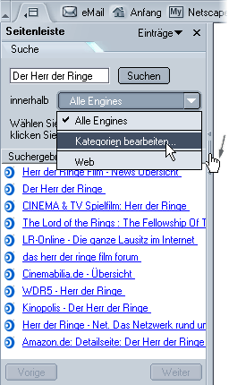
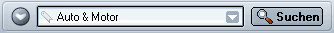
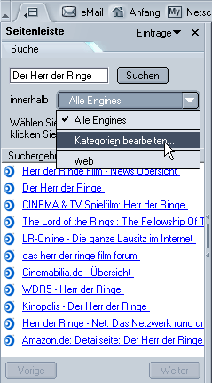

Durchsuchen des Webs
Willkommen bei Netscape! Zu den beliebtesten
Anwendungsmöglichkeiten von Netscape gehört bei den meisten Menschen das Surfen
im Web. Navigator, die Netscape-Komponente für den Besuch von Webseiten, bietet
viele Funktionen für die Darstellung von Webseiten und die Suche im Web.
Dieser Abschnitt enthält eine Einführung zu Navigator und
erklärt, wie Sie damit Webseiten suchen, durchsuchen und speichern können.
Navigieren auf Webseiten
Ansicht der Anfangsseite
Wenn Sie Netscape starten, sehen Sie den Navigator, Ihren Browser. Die Seite Neuigkeiten wird automatisch im
Browserfenster angezeigt, wenn Sie Netscape zum ersten Mal starten.
Beim nächsten Starten von Netscape wird in der Regel Ihre
Anfangsseite angezeigt. Falls Sie sich nicht selbst für eine Anfangsseite
entscheiden, wird sie von Ihrem Netzwerkadministrator oder
Internetdienstanbieter ausgewählt oder Sie sehen die Anfangsseite von
Netscape.
Weitere Informationen zur Auswahl Ihrer eigenen Anfangsseite finden Sie unter Startoptionen von
Netscape.
Tipp:
- Um die Oberfläche von Netscape effizienter zu gestalten, können Sie mithilfe des Vollbild-Modus den gesamten Bildschirm bei der Darstellung von Webseiten nutzen. Klicken Sie in Navigator im Menü Anzeigen auf Vollbild. Sie
können auch F11 drücken.
- Um rasch wieder zu Ihrer Anfangsseite zu wechseln,
drücken Sie ALT+POS1 (BEFEHL+POS1 beim Mac OS)
[ Zurück zum Anfang des Abschnitts ]
Aufrufen einer anderen Seite
Sie können eine neue Seite aufrufen, indem Sie den entsprechende URL, also die Internetadresse eingeben. URLs beginnen normalerweise mit der Abkürzung http://, dann folgen
ein oder mehrere Namen, die die Adresse genau angeben. Beispiel:
"http://netscape.com".
- Klicken Sie auf die Adressleiste, um die URL auszuwählen, der sich bereits darin befindet.
- Geben Sie die URL der Seite ein, die Sie besuchen möchten. Die von Ihnen eingegebene URL ersetzt den Text in der Adressleiste.
- Drücken Sie die EINGABETASTE.
Mithilfe des Schlosssymbols in der unteren rechten Ecke des Fenster können Sie jederzeit den Sicherheitsstatus der Webseite überprüfen. Weitere Informationen finden Sie unter Überprüfen der Sicherheit
für eine Webseite.
Tipp: Um die URL in der
Adressleiste schnell auszuwählen, drücken Sie STRG+L.
Sie kennen eine URL nicht? Sie können einen Teil einer URL wie beispielsweise cnn
(für www.cnn.com) oder einen allgemeinen Begriff wie beispielsweise "Geschenke"
oder "Blumen" eingeben. Von Navigator wird erkannt, welche Seiten Sie anzeigen
möchten, oder eine Seite mit einer Auswahl an Verknüpfungen, die sich auf den
von Ihnen eingegebenen Begriff beziehen, wird angezeigt.
Wenn Sie mit dem Internet noch nicht vertraut sind, finden Sie im Lernprogramm Neu im Net Tutorial eine Anleitung.
[ Zurück zum Anfang des Abschnitts ]
Klicken auf eine Verknüpfung
Die meisten Webseiten enthalten Verknüpfungen, auf die
Sie klicken können, um andere Seiten aufzurufen.
- Bewegen Sie den Zeiger, bis daraus ein Zeigefinger
wird. Immer wenn sich der Zeiger über einer Verknüpfung befindet, wird er zum
Zeigefinger. Die meisten Verknüpfungen bestehen aus unterstrichenem Text, aber
auch Schaltflächen und Bilder können Verknüpfungen sein.
- Klicken Sie einmal auf die Verknüpfung. Während die
Seite gesucht wird, auf die die Verknüpfung verweist, werden im unteren
Fensterbereich Statusnachrichten angezeigt.
[ Zurück zum Anfang des Abschnitts ]
Zurückverfolgen der Schritte
Sie können Seiten auf verschiedene Arten erneut
aufrufen:
- Wenn Sie eine Seite zurück oder weiter gehen möchten, klicken Sie auf den Zurück- oder Vor-Pfeil.
- Wenn Sie mehr als eine Seite zurück oder weiter gehen möchten, klicken Sie auf die kleinen Dreiecke auf den Schaltflächen Zurück und Vor. Eine Liste
der besuchten Seiten wird angezeigt. Wenn Sie zu einer Seite zurückkehren
möchten, wählen Sie sie aus der Liste aus.
 |
| Zurück Vor
|
- Wenn Sie eine Liste aller URLs anzeigen möchten, die
Sie in die Adressleiste eingegeben haben, klicken Sie auf den Pfeil, der sich
am rechten Ende der Adressleiste befindet. Wenn Sie eine Seite aufrufen
möchten, wählen Sie sie in der Liste aus.
- Wenn Sie eine der Seiten auswählen möchten, die Sie während der aktuellen Sitzung besucht haben, öffnen Sie das Menü Gehe und wählen Sie die gewünschte Seite aus der Liste im unteren Abschnitt des Menüs aus.
- Wenn Sie eine der Seiten auswählen möchten, die Sie während der letzten Sitzungen besucht haben, klicken Sie im Menü Gehe auf History. Die
History-Liste wird angezeigt. Sie enthält eine Liste von Ordnern. Wenn Sie auf
einen Ordner doppelklicken, werden untergeordnete Ordner oder Lesezeichen für
Webseiten angezeigt. Sie können auf die URL neben einem Lesezeichensymbol
doppelklicken, um die entsprechende Seite anzuzeigen.
Tipp: Der Eintrag History in Meine
Seitenleisteermöglicht Ihnen ebenfalls die Auswahl von Seiten, die Sie in den letzten Sitzungen besucht haben. Weitere Informationen finden Sie unter Hinzufügen von Einträgen
zu "Meine Seitenleiste".
History-Listen
Die History-Liste enthält Verknüpfungen zu kürzlich
besuchten Seiten. Die Liste der Adressleiste enthält Verknüpfungen zu Seiten,
die Sie in die Adressleiste eingegeben und dann besucht haben.
Um in Navigator auf die History-Liste zuzugreifen, klicken Sie im Menü Gehe auf History. Um auf die Liste der Adressleiste zuzugreifen,
klicken Sie auf den Pfeil rechts von der Adressleiste.
Tipp: Um die History-Liste
schnell zu öffnen, drücken Sie STRG+H.
Wenn in der Adressleiste oder der History-Liste die
besuchten Seiten nicht angezeigt werden sollen, können Sie die History-Liste und
die Liste der Adressleiste ganz oder teilweise löschen:
So löschen Sie alle Seiten aus der Adressleiste oder der
History-Liste (ausgehend vom Navigator-Fenster):
- Klicken Sie im Menü Bearbeiten auf Einstellungen.
- Klicken Sie in der Kategorie Navigator auf History. (Wenn in dieser Kategorie keine Einträge angezeigt werden, doppelklicken Sie auf Navigator, um die Liste zu erweitern.)
- Klicken Sie auf History
löschen und Adressleiste löschen, um alle vorher besuchten Webseiten aus den Listen zu entfernen.
- Wenn Sie die Anzahl der Seiten in der History-Liste begrenzen möchten, klicken Sie in das Feld neben Anzahl
der Seiten in der Sitzungs-History und geben Sie die Anzahl der Seiten
ein.
So löschen Sie gezielt Seiten aus der History-Liste:
- Um alle Seiten einer Domain zu löschen, wählen Sie in der History-Liste eine Seite der Domain aus und klicken Sie im Menü Bearbeiten auf Gesamte Domain [Domainname]löschen. Verwenden Sie diesen
Befehl, wenn Sie beispielsweise alle Seiten löschen möchten, die auf
"netscape.com" enden.
- Um alle Seiten einer Unterdomain zu löschen, wählen Sie in der History-Liste eine Seite der Unterdomain aus und klicken Sie im Menü Bearbeiten auf Alles löschen von [Unterdomain]. Verwenden Sie diesen
Befehl, wenn Sie beispielsweise alle Seiten von "health.netscape.com", nicht
aber von "netscape.com" löschen möchten.
- Um eine einzelne Seite zu löschen, klicken Sie im
History-Fenster auf die Seite und drücken Sie ENTF.
Tipp: Wenn Sie die
History-Liste sortieren möchten, klicken Sie auf eine der Kategorien (Name, URL
oder Zuletzt aufgerufen). Klicken Sie erneut auf den Namen, um die Reihenfolge
umzukehren.
[ Zurück zum Anfang des Abschnitts ]
Stoppen und erneutes Laden
Wenn das Laden einer Seite zu lange dauert oder Sie eine Seite doch nicht anzeigen möchten, klicken Sie auf die Schaltfläche Stopp.
Wenn Sie die aktuelle Seite aktualisieren oder die aktuellste Version erhalten möchten, klicken Sie auf Neu
laden oder drücken Sie STRG+UMSCHALT+R (beim Mac OS: BEFEHL+UMSCHALT+R)
| |
|
Neu laden
|
Stop
|
[ Zurück zum Anfang des Abschnitts ]
Besuchen von Seiten, die als Lesezeichen gespeichert
sind
Die Adressen oder URLs von Webseiten können ziemlich lang
und schwer einprägsam sein. Zum Glück müssen Sie sich URLs nicht merken, um
Webseiten im Internet aufzurufen. Der Browser verfügt über eine Liste von
Lesezeichen, die auf interessante Webseiten verweisen.
So wechseln Sie zu einer als Lesezeichen gespeicherten
Seite (ausgehend vom Navigator-Fenster):
- Öffnen Sie das Menü Lesezeichen. Im Menü sind Lesezeichen, die durch ein
Lesezeichensymbol dargestellt werden und Ordner mit weiteren Lesezeichen
enthalten.
- Wenn Sie eine Seite aufrufen möchten, die als
Lesezeichen gespeichert ist, wählen Sie ein Lesezeichen aus dem Menü aus oder
öffnen Sie einen Ordner und wählen Sie ein Lesezeichen aus.
Tipp: Wenn Sie Ihre Schritte zurückverfolgen möchten, klicken Sie auf den Zurück-Pfeil.
Sie können eigene Lesezeichen speichern, die auf häufig aufgerufene Seiten oder auf andere interessante Webinhalte verweisen. Weitere Informationen finden Sie unter Erstellen neuer
Lesezeichen.
[ Zurück zum Anfang des Abschnitts ]
Verwenden der Registerkarten
Wenn Sie gleichzeitig mehrere Webseiten besuchen, können
Sie mithilfe der Registerkarten schneller und einfacher im Web navigieren.
Sie können Registerkarten öffnen, die innerhalb eines
einzigen Navigator-Fensters jeweils eine Webseite darstellen. Sie müssen nicht
mehr unzählige Fenster öffnen, um verschiedene Webseiten zu besuchen. Aus diese
Weise haben Sie mehr Platz auf dem Desktop. Sie können Webseiten ganz bequem an
einer Stelle öffnen, schließen und neu laden, ohne in andere Fenster wechseln zu
müssen.
Die Verwaltung Ihrer Navigations-Registerkarten ist einfach und Sie können festlegen, wann sich die Registerkarten automatisch öffnen. Weitere Informationen zu den Einstellungen der Registerkartenfinden Sie unter Navigator-Einstellungen –
Registerkarten.
Weitere Informationen zur Verwendung der Registerkarten finden Sie unter Registerkarten.
[ Zurück zum Anfang des Abschnitts ]
Verwenden von "Meine Seitenleiste"
Sie können nicht nur mit Navigator durch das Web navigieren, sondern mit Hilfe von Meine Seitenleiste
das Web zu Ihnen kommen lassen.
Meine Seitenleiste ist ein benutzerdefinierter Frame im Browser, in dem Sie die Objekte speichern können, die Sie immer wieder verwenden – die neuesten Nachrichten, den Wetterbericht, das Adressbuch oder Ihre Buddy-Liste, Aktienkurse, einen Kalender und viele andere Optionen. In Meine Seitenleiste werden diese
Objekte als Einträge angezeigt und ständig aktualisiert.
In Netscape sind einige Einträge bereits unter Meine Seitenleiste eingerichtet, doch Sie können Meine Seitenleiste durch Hinzufügen, Entfernen und Neuanordnen der Einträge anpassen. Weitere Informationen finden Sie unter Meine Seitenleiste.
Wenn Sie ein Objekt in Meine
Seitenleiste anzeigen möchten, klicken Sie auf die entsprechenden
Eintrag.
|  |
Meine Seitenleiste –
Griff |
Wenn Meine Seitenleiste noch nicht geöffnet ist, klicken Sie auf den "Griff". Wenn der Griff nicht vorhanden ist, klicken Sie in Navigator im Menü Anzeigen auf Ein-/ausblenden und dann auf Meine
Seitenleiste. |
[ Zurück zum Anfang des Abschnitts ]
Durchsuchen des Webs
Schnelles Suchen
Es gibt drei Arten der Schnellsuche: von der Adressleiste, von Meine Seitenleiste und von der Seite Nescape Suche aus.
Suche von der Adressleiste aus
Wenn Sie Webseiten zu bestimmten Themen suchen, geben
Sie, wie unten abgebildet, einfach eine Frage oder ein oder zwei Wörter in die
Adressleiste des Browsers ein.

Wenn Sie beispielsweise Informationen über Hunde suchen,
gehen Sie wie folgt vor:
- Doppelklicken Sie auf die Adressleiste, um den aktuellen Text zu markieren.
- Geben Sie den Begriff "Hund" ein. Während der Eingabe wird der aktuelle Text ersetzt.
- Führen Sie einen der folgenden Schritte aus:
- Klicken Sie auf die Schaltfläche Suchen.
- Klicken Sie auf Suche Netscape
Suche für "Hund" am Ende der Dropdown-Liste in der Adressleiste. (Eventuell unterscheidet sich Ihre Standardsuchmaschine hiervon.)
Die in den Einstellungen angegebene Standardsuchmaschine wird verwendet. Die Suchergebnisse für den Begriff "Hund" werden sowohl im Browserfenster als auch in Meine Seitenleiste
angezeigt. Klicken Sie auf die Verknüpfungen, um die Webseiten über Hunde
aufzurufen.
Nachdem Sie eine Suche durchgeführt haben, werden die Ergebnisse in dem Eintrag Suche von Meine Seitenleiste gespeichert, bis Sie eine neue Suche durchführen. Sie brauchen nicht auf die Schaltfläche Zurück zu klicken, um die Suchergebnisse abzurufen.
Anmerkung: Sie können in der Adressleiste auch eine Suche mit Internet-Schlüsselwörtern durchführen.
Suchen von "Meine Seitenleiste" aus
Mit dem Eintrag Suchen von Meine Seitenleiste können Sie schnell eine Suche
durchführen und die Suchergebnisse mit einem Lesezeichen versehen. Wenn Sie
beispielsweise Informationen über Katzen suchen, gehen Sie wie folgt vor:
- Wenn Meine Seitenleiste noch nicht geöffnet ist, klicken Sie auf den "Griff".
- Klicken Sie auf den Eintrag Suche.
- Öffnen Sie die Dropdown-Liste "unter Verwendung von" und wählen Sie eine Suchmaschine aus.
- Geben Sie "Katze" in das Suchfeld ein.
- Klicken Sie auf Suchen. Die Suchergebnisse für den Begriff "Katze" werden sowohl im Browserfenster als auch in Meine Seitenleiste angezeigt. Klicken Sie
auf die Verknüpfungen, um die Webseiten über Katzen aufzurufen.
Anmerkung: Wenn der Eintrag Suche von Meine Seitenleiste eine Liste von Suchmaschinen enthält, ist sie für die Suche im erweiterten Modus eingestellt. Sie müssen dann zuerst eine Suchmaschine auswählen, bevor Sie auf Suchen klicken. Sie können sie so belassen oder unter Einstellungen in den normalen Modus umschalten.
Tipp: Um schnell zwischen der nächsten und der vorigen Seite der Suchergebnisse zu wechseln, klicken Sie auf die Vor- und Zurück-Schaltflächen unten in dem Eintrag Suche von Meine Seitenleiste.
Suchen von der Seite "Netscape Suche" aus
Auf der Seite Netscape Suche können Sie ein Wort oder einen Begriff für die Suche eingeben oder unter verschiedenen Kategorien suchen (z. B. Freizeit, Gesundheit usw.), die Sie interessieren. Um die Seite Netscape Suche zu
besuchen, haben Sie folgende Möglichkeiten:
- Klicken Sie auf die Schaltfläche Suchen auf Ihrer persönlichen Symbolleiste.
- Klicken Sie im Menü Extras auf Internet durchsuchen.
Suche nach ausgewählten Wörtern auf einer Webseite
Sie können nach Wörtern suchen, die Sie auf einer
Webseite ausgewählt haben.
- Wählen (markieren) Sie Wörter auf einer Webseite aus.
- Klicken Sie mit der rechten Maustaste darauf, und klicken Sie auf Web-Suche nach [ausgewählte
Wörter]. (Zum Klicken mit der rechten Maustaste beim Mac OS, drücken Sie
CTRL und die Maustaste.)
Netscape öffnet ein neues Fenster und sucht mit Ihrer Standardsuchmaschine nach den ausgewählten Wörtern. Informationen zum Ändern der Suchmaschine für die Suche nach ausgewählten Wörtern finden Sie unter Navigator-Einstellungen –
Internet-Suche.
[ Zurück zum Anfang des Abschnitts ]
Erweiterter Suchmodus
Sie können in dem Eintrag Suche von Meine Seitenleiste den Modus Erweitert einstellen und dann eine Suche
eingrenzen oder eine bzw. mehrere Suchmaschinen auswählen.
- Klicken Sie im Menü Bearbeiten auf Einstellungen.
- Klicken Sie in der Kategorie Navigator auf Internet-Suche. (Wenn in dieser Kategorie keine Einträge angezeigt werden, doppelklicken Sie auf Navigator, um die Liste zu erweitern.)
- Klicken Sie unter Einstellung
für Eintrag 'Suchen' in der Seitenleiste auf Erweitert und anschließend auf OK.
- Wenn Meine Seitenleiste noch nicht geöffnet ist, klicken Sie auf den "Griff".
- Klicken Sie auf den Eintrag Suche in Meine
Seitenleiste.
- Öffnen Sie die Dropdown-Liste innerhalb und wählen Sie eine Kategorie aus.
- Wählen Sie eine oder mehrere Suchmaschinen für die gewählte Kategorie aus (falls verfügbar).
- Geben Sie den Begriff, nach dem Sie suchen möchten, in
das Suchfeld ein.
- Klicken Sie auf Suchen.

Anpassen von Suchkategorien
Sie können angeben, welche Suchmaschinen für die
verschiedenen Suchkategorien verwendet werden sollen. Sie können beispielsweise
eine Gruppe von Suchmaschinen für die Suche nach Reiseinformationen und eine
andere Gruppe für die Suche nach Software verwenden.
- Stellen Sie den erweiterten Suchmodus für Meine Seitenleisteein. Weitere Informationen finden Sie unter Erweiterter Suchmodus.
- Wenn Meine Seitenleiste noch nicht geöffnet ist, klicken Sie auf den "Griff".
- Klicken Sie auf den Eintrag Suche in Meine
Seitenleiste.
- Öffnen Sie die Dropdown-Liste innerhalb und klicken Sie auf Kategorien bearbeiten. Das Dialogfeld Kategorien bearbeiten wird angezeigt.
- Wählen Sie in der Dropdown-Liste Kategorie die Kategorie aus, die Sie anpassen möchten.
Oder
erstellen Sie eine neue Kategorie, indem Sie auf die Option Neu klicken und in dem Dialogfeld einen Namen für die Kategorie eingeben. Der Name der ausgewählten Kategorie wird nun in der Dropdown-Liste angezeigt.
- Führen Sie einen der folgenden Schritte aus:
- Um der ausgewählten Kategorie eine Suchmaschine hinzuzufügen, markieren Sie die Suchmaschine in der linken Liste und klicken Sie auf Hinzufügen.
- Um für die ausgewählte Kategorie eine Suchmaschine zu entfernen, markieren Sie die Suchmaschine in der rechten Liste und klicken Sie auf Entfernen.
- Um die ausgewählte Kategorie umzubenennen, klicken Sie auf Umbenennen und geben einen neuen Namen
ein.
- Um die ausgewählte Kategorie zu löschen, klicken Sie auf Löschen.
- Klicken Sie auf OK, wenn
Sie fertig sind.
[ Zurück zum Anfang des Abschnitts ]
Festlegen von Sucheinstellungen
Wenn SieaufSuchen klicken, wird standardmäßig die Netscape Search-Suchmaschine verwendet. Sie können eine andere Suchmaschine als Standard einstellen. Sie können auch angeben, wie die Suchergebnisse in Meine Seitenleiste angezeigt werden
sollen.
- Klicken Sie im Menü Bearbeiten auf Einstellungen.
- Klicken Sie in der Kategorie Navigator auf Internet-Suche. (Wenn in dieser Kategorie keine Einträge angezeigt werden, doppelklicken Sie auf Navigator, um die Liste zu erweitern.)
- Wählen Sie unter Standard-Suchmaschine eine Suchmaschine aus, die Sie für die Suche im Web verwenden möchten.
- Aktivieren Sie unter Suchergebisse die Option Eintrag 'Suchen' in der Seitenleiste öffnen, wenn
Suchergebnisse verfügbar sind, wenn die Suchergebnisse in dem Eintrag Suche in Meine Seitenleiste angezeigt werden sollen.
- Aktivieren Sie unter Einstellung für Eintrag 'Suchen' in 'Meine
Seitenleiste' die Option Normal, wenn Sie mit nur einer Suchmaschine suchen möchten, oder Erweitert, wenn Sie mit mehreren Suchmaschinen suchen
möchten.
[ Zurück zum Anfang des Abschnitts ]
Verwenden von Internet-Schlüsselwörtern
Internet-Schlüsselwörter werden in der Adressleiste
verwendet, damit Sie bestimmte Arten von Informationen schnell finden.
Internet-Schlüsselwörter können auf verschiedene Arten verwendet werden:
- Geben Sie ein bestimmtes Produkt, Warenzeichen oder einen bestimmten Firmennamen ein und drücken Sie die Eingabetaste, um die Website eines Unternehmens direkt aufzurufen.
- Geben Sie bestimmte Verben wie beispielsweise einkaufen oder zitieren gefolgt von einem speziellen Suchbegriff ein, um bestimmte Informationen zu erhalten. Wenn Sie beispielsweise Haustiere kaufen eingeben, wird eine Seite aufgerufen, die auf Seiten verweist, auf denen Sie online Haustiere kaufen können.
- Geben Sie den Namen einer Stadt ein und stellen Sie bestimmte Begriffe wie beispielsweise Filme oder Restaurants nach, um Informationen für den gewünschten Ort zu erhalten. Geben Sie beispielsweise Berlin
Restaurants ein.
Hinweis: Die am häufigsten verwendeten Internet-Schlüsselwörter werden in der Dropdown-Liste auf der linken Seite der Adressleiste angezeigt. Klicken Sie auf das Dreieck und treffen Sie eine Auswahl aus der Liste. Wenn Sie eine längere Schlüsselwortliste anzeigen möchten, klicken Sie auf Keyword-Liste.
Wichtig: Wenn Sie Internet-Schlüsselwörter verwenden möchten, drücken Sie auf die Eingabetaste auf der Tastatur, statt auf die Schaltfläche Suchen zu klicken. Durch Drücken der Eingabetaste wird die Internet Keyword-Funktion aktiviert, während das Klicken auf Suchen eine Suche
auslöst.
Wenn Sie den Unterschied sehen möchten, probieren Sie Folgendes aus:
- Geben Sie Apple Imac in die Adressleiste ein und drücken Sie die Eingabetaste. Die iMac-Webseite von Apple Computer wird angezeigt.
- Geben Sie nun Apple Imac in die Adressleiste ein und klicken Sie auf Suchen.
Eine Liste von Verknüpfungen, die sich auf die iMac-Modelle von Apple Computer
beziehen, wird angezeigt.
Wenn die Eingabe von Internet-Schlüsselwörtern in die Adressleiste nicht ausgeführt werden kann, aktivieren Sie die Smart
Browsing-Einstellungen, um sicherzustellen, dass die Funktion Internet-Schlüsselwörter aktiviert ist.
Schnelles Anzeigen von Aktienkursen
Wenn Sie den aktuellen Aktienkurs eines Unternehmens anzeigen möchten, geben Sie Aktienkurs ein, stellen
Sie das Aktienticker-Symbol des Unternehmens nach und drücken Sie die
Eingabetaste.
Wenn Sie das Aktienticker-Symbol nicht kennen, geben Sie
den Firmennamen ein. In der Kursseite werden alle Unternehmen mit ähnlichen
Namen aufgelistet und Sie können das Unternehmen auswählen, dessen Aktienkurs
Sie anzeigen möchten.
[ Zurück zum Anfang des Abschnitts ]
Suchen innerhalb einer Seite
So suchen Sie einen Text auf der gerade in Navigator angezeigten Seite:
- Klicken Sie im Menü Bearbeiten auf Auf dieser Seite
suchen. Wenn die angezeigte Seite Frames enthält, müssen Sie möglicherweise vor der Suche innerhalb eines Frame klicken. Das Dialogfeld Auf dieser Seite suchen wird angezeigt.
- Geben Sie den Text ein, den Sie suchen möchten.
- Wählen Sie eine der folgenden Suchoptionen aus:
- Groß-/Kleinschreibung
beachten: Wählen Sie diese Option aus, um nach einem Wort oder einer Wortgruppe zu suchen, die genau dem eingegebenen Wort entspricht (einschließlich Groß- und Kleinbuchstaben).
- Am Dokumentanfang
fortsetzen: Wählen Sie diese Option aus, damit der Browser ab der Stelle, an der sich der Cursor befindet, bis zum Seitenende sucht und dann die Suche am Seitenanfang fortsetzt. Anmerkung: Normalerweise wird die Seite von der Position aus, auf die zuletzt geklickt wurde, bis zum Seitenende durchsucht.
- Aufwärts suchen: Diese
Option sucht von der Position des Cursors an rückwärts bis zum Seitenanfang.
- Starten Sie die Suche, indem Sie auf Suchen klicken.
So finden Sie das gleiche Wort oder die gleiche
Wortgruppe erneut:
- Klicken Sie im Menü Bearbeiten auf Weitersuchen.
[ Zurück zum Anfang des Abschnitts ]
Durchsuchen der Lesezeichen- oder History-Liste
So durchsuchen Sie die Lesezeichenliste (ausgehend vom
Navigator-Fenster):
- Klicken Sie im Menü Lesezeichen auf Lesezeichen
verwalten. Das Lesezeichenfenster wird angezeigt.
- Klicken Sie im Lesezeichenfenster im Menü Extras auf Lesezeichen
suchen. Das Dialogfeld Lesezeichen suchen wird angezeigt.
- Verwenden Sie die Dropdown-Listen, um Optionen auszuwählen, die Ihre Suchkriterien definieren.
- Geben Sie einen Suchbegriff ein.
- Klicken Sie auf Suchen. Lesezeichen, die Ihren Suchkriterien entsprechen, werden im Fenster Suchergebnisse - Lesezeichen angezeigt.
Tipp: Um das Menü Lesezeichen schnell zu öffnen, drücken Sie STRG+B.
So suchen Sie in der History-Liste:
- Klicken Sie im Menü Gehe auf History. Die History-Liste wird angezeigt.
- Öffnen Sie in der History-Liste das Menü Extras und klicken Sie auf History-Liste durchsuchen. Das Dialogfeld In History suchen wird angezeigt.
- Verwenden Sie die Dropdown-Listen, um Optionen auszuwählen, die Ihre Suchkriterien definieren.
- Wählen
Sie eine der folgenden Suchoptionen aus:
- Wählen Sie "Name" oder "Adresse" aus, um anzugeben, wo Sie suchen möchten. (Im Lesezeichenfenster können Sie nach Namen, Beschreibungen und Schlüsselwörtern suchen.)
- Wählen Sie enthält, beginnt mit oder endet mit
aus, wenn Sie nur einen Teil des Wortes oder der Wortgruppe kennen, nach der
Sie suchen.
- Wählen Sie ist aus, wenn Sie genau wissen, wonach Sie suchen:
- Wählen Sie ist nicht oder enthält nicht, um Seiten auszuschließen.
- Klicken Sie in das Eingabefeld und geben Sie das Wort
oder die URL (Webadresse) teilweise oder ganz für die Lesezeichen oder
History-Einträge ein, die Sie suchen oder ausschließen möchten.
- Klicken Sie auf Suchen. History-Einträge, die Ihren Suchkriterien entsprechen, werden im Fenster Suchergebnisse angezeigt.
So verwenden Sie die Suchergebnisse:
- Doppelklicken Sie auf ein Lesezeichen im Fenster Suchergebnisse, um diese Webseite aufzurufen.
Tipp:
- Um die History-Liste schnell zu öffnen, drücken Sie
STRG+H.
- Wenn die Liste nicht gut lesbar ist, können Sie versuchen, das Fenster Suchergebnisse zu
vergrößern.
[ Zurück zum Anfang des Abschnitts ]
Kopieren, Speichern und Drucken von Seiten
Kopieren eines Teils einer Seite
So kopieren Sie Text in einer Seite (ausgehend vom Navigator-Fenster):
- Markieren Sie den Text.
- Klicken Sie im Menü Bearbeiten auf Kopieren.
Sie können den Text in andere Programme einfügen.
So kopieren Sie eine Verknüpfung (URL) oder eine Grafik
auf einer Seite:
- Platzieren Sie den Zeiger auf einer Verknüpfung oder einer Grafik.
- Klicken Sie mit der rechten Maustaste auf die Verknüpfung oder die Grafik, um das Kontextmenü anzuzeigen. (Beim Mac OS drücken Sie CTRL und die Maustaste.)
- Wählen Sie die Option Verknüpfungsadresse kopieren oder Grafikadresse kopieren aus. Wenn eine Grafik auch eine
Verknüpfung darstellt, können Sie zwischen zwei Optionen auswählen.
Sie können die Verknüpfung in anderen Programmen oder in
die Adressleiste von Navigator einfügen.
[ Zurück zum Anfang des Abschnitts ]
Speichern einer gesamten oder eines Teils einer
Seite
So speichern Sie eine vollständige Seite (ausgehend vom
Navigator-Fenster):
- Klicken Sie im Menü Datei auf Seite speichern unter. Das Dialogfeld Speichern unter wird angezeigt.
- Wählen Sie einen Ordner aus, in dem die Datei gespeichert werden soll.
- Wählen Sie für die zu speichernde Seite ein Format
aus:
- Webseite, vollständig:
Speichert die gesamte Webseite einschließlich der Grafiken. Sie können dann
die Webseite wie im Original, einschließlich der Grafiken, anzeigen lassen.
Die HTML-Verknüpfungsstruktur bleibt jedoch möglicherweise nicht erhalten.
Netscape erstellt ein neues Verzeichnis für die Seite, um die Grafiken und
alle weiteren Dateien zu speichern, die für die Darstellung der
vollständigen Seite nötig sind.
- Webseite, nur HTML: Die
Originalseite wird ohne Grafiken gespeichert. Mit dieser Option wird die
ursprüngliche HTML-Verknüpfungsstruktur in einer Datei erfasst.
- Textdatei: Die
Originalseite wird als Textdatei gespeichert. Bei dieser Option wird die
ursprüngliche HTML-Verknüpfungsstruktur nicht beibehalten, Sie können jedoch
den Text der Webseite in jedem Texteditor öffnen.
- Geben Sie einen Dateinamen für die Seite ein und klicken Sie auf Speichern.
Wenn eine Seite mit Frames angezeigt wird und ein Frame derzeit ausgewählt ist, ist die Option Frame speichern
unter des Kontextmenüs zusätzlich zur Option Seite
speichern unter verfügbar. Dadurch können Sie nur die Seite innerhalb des
ausgewählten Frames auswählen.
Wenn Sie die Datei auf der Festplatte speichern, können
Sie die Seite (oder den entsprechenden HTML-Code) anzeigen, wenn Sie nicht
online sind.
So speichern Sie die Grafik einer Seite:
- Platzieren Sie den Mauszeiger auf der Grafik.
- Klicken Sie mit der rechten Maustaste auf die Grafik (beim Mac OS drücken Sie CTRL und die Maustaste), um ein Kontextmenü anzuzeigen.
- Klicken Sie auf Grafik
speichern unter. Das Dialogfeld Datei speichern wird angezeigt.
- Wählen Sie einen Ordner aus, in dem die Grafik gespeichert werden soll.
- Geben Sie einen Dateinamen für die Grafik ein und klicken Sie auf Speichern.
So können Sie eine Seite speichern, ohne sie anzuzeigen
(was bei der Wiederherstellung von nichtformatierten Seiten wie beispielsweise
einer Datendatei, die nicht zur Anzeige bestimmt ist, hilfreich ist):
- Platzieren Sie den Mauszeiger auf der Verknüpfung der Seite.
- Klicken Sie mit der rechten Maustaste auf die Verknüpfung auf der Seite (beim Mac OS drücken Sie CTRL und die Maustaste), um ein Kontextmenü anzuzeigen.
- Klicken Sie auf Verknüpfungsziel speichern unter.... Das Dialogfeld Datei speichern wird angezeigt.
- Wählen Sie einen Ordner aus, in dem die Datei gespeichert werden soll.
- Geben Sie einen Dateinamen für die Seite ein und klicken Sie auf Speichern.
Wichtig: Bei manchen Verknüpfungen werden Dateien automatisch heruntergeladen und auf der Festplatte gespeichert, nachdem Sie darauf geklickt haben. Die URLs für diese Verknüpfungen beginnen oft mit ftp oder enden mit einer dateitypischen Endung wie beispielsweise au oder mpeg. Diese Verknüpfungen übertragen möglicherweise
Software, Klang oder Filmdateien und können Hilfsprogramme starten, die die
Dateien unterstützen.
Tipp: Wenn Sie eine Grafik als Desktophintergrund in Windows einstellen möchten, klicken Sie mit der rechten Maustaste auf die Grafik und klicken im Kontextmenü auf Als Hintergrundbild einrichten.
[ Zurück zum Anfang des Abschnitts ]
Drucken einer Seite
So drucken Sie die aktuelle Seite (ausgehend vom
Navigator-Fenster):
- Klicken Sie im Menü Datei auf Drucken.
So drucken Sie den ausgewählten Text (ausgehend vom
Navigator-Fenster):
- Markieren Sie den Text auf der aktuellen Seite.
- Klicken Sie im Menü Datei auf Drucken. Das Dialogfeld Drucken wird angezeigt.
- Klicken Sie unter Seitenbereich auf Markierung.
Die Größe der gedruckten Seite, nicht die Größe des
Bildschirmfensters, bestimmt die Ausrichtung des Inhalts auf dem Ausdruck. Der
Seitengröße entsprechend wird Text umgebrochen und Grafiken werden neu
platziert.
Verwenden der Druckvorschau
Wenn Sie vorher wissen möchten, wie die gedruckte Seite
aussieht, können Sie die Druckvorschau verwenden. Beginnen Sie im
Navigator-Fenster:
In der Druckvorschau können Sie die zu druckenden Seiten
folgendermaßen bearbeiten:
- Anzeigen einer Vorschau für
jede Seite: Klicken Sie zum Wechseln zwischen den Seiten auf die Schaltflächen Weiter
 , Vorige
, Vorige  , Erste
, Erste  oder Letzte
oder Letzte  .
.
- Die Größe der Seiten
ändern: Geben Sie in das Feld Größeeinen Prozentsatz der Originalgröße ein und drücken Sie die EINGABETASTE. Geben Sie beispielsweise "50" ein und drücken Sie die EINGABETASTE, um jede Seite um die Hälfte zu verkleinern. Klicken Sie auf die Aufwärts-
 oder Abwärts-Schaltfläche
oder Abwärts-Schaltfläche , um die Größe
dementsprechend um eine Stufe zu verringern oder zu erhöhen.
, um die Größe
dementsprechend um eine Stufe zu verringern oder zu erhöhen.
- Die Ausrichtung der Seite
ändern: Klicken Sie auf Hochformat
 , um die Seite normal auszurichten, wobei die kürzere Seite oben liegt. Klicken Sie auf Querformat
, um die Seite normal auszurichten, wobei die kürzere Seite oben liegt. Klicken Sie auf Querformat , um
die Seite quer auszurichten, wobei die längere Seite oben liegt.
, um
die Seite quer auszurichten, wobei die längere Seite oben liegt.
- Seite einrichten: Klicken Sie auf Seite einrichten, um die zu druckenden
Seiten weiter anzupassen.
- Drucken: Klicken Sie auf Drucken, um die Seiten zu drucken.
Anmerkung: Einige Funktionen
der Druckvorschau unterscheiden sich beim Mac OS und bei Linux.
Verwenden von "Seiteneinrichtung"
Anmerkung: Einige Funktionen von Seiteneinrichtung unterscheiden sich beim Mac OS
und bei Linux oder sind nicht vorhanden.
Sie können mithilfe Seiteneinrichtung das Drucken von Seiten in Netscape
anpassen:
In Seiteneinrichtung können
Sie die folgenden Einstellungen für die zu druckenden Seiten ändern:
- Format & Optionen:
Wählen Sie die Ausrichtung, Skalierung und weitere Optionen aus:
- Ausrichtung:
- Hochformat: Wählen Sie diese Option aus ,
um die Seite normal auszurichten, wobei die kürzere Seite oben liegt.
- Querformat: Wählen Sie diese Option aus ,
um die Seite quer auszurichten, wobei die längere Seite oben liegt.
- Größe ändern: Geben Sie einen Prozentsatz der Originalgröße ein. Geben Sie beispielsweise "50" ein, um jede Seite um die Hälfte zu verkleinern.
- An Seitenbreite
anpassen: Wählen Sie diese Option aus, um die Seite automatisch der
Papiergröße anzupassen.
- Optionen:
- Hintergrund drucken (Farben
& Bilder): Wählen Sie diese Option aus, um die Grafiken und Farben
des Hintergrunds zu drucken. Wenn Sie die Option nicht aktivieren, werden
nur Grafiken und Farben des Vordergrunds gedruckt.
- Seitenränder &
Kopf-/Fußzeile: Klicken Sie auf diese Registerkarte, um die Ränder sowie
die Kopf- und Fußzeilen einzurichten:
- Ränder:
- Oben, Unten, Links,
Rechts: Geben Sie für den oberen, unteren, linken und rechten Rand
einen Wert in Zoll ein.
- Kopf- & Fußzeilen:
Jede Dropdown-Liste gibt einen Kopf- oder Fußzeilenbereich wieder. In der
oberen Reihe der Dropdown-Listen können Sie den linken, mittleren und
rechten Kopfzeilenbereich einrichten. In der unteren Reihe richten Sie den
linken, mittleren und rechten Fußzeilenbereich ein. Wählen Sie in jeder
Dropdown-Liste eine der folgenden Optionen aus:
- --leer--: In dem
Bereich wird nichts angezeigt.
- Titel: Zeigt den Titel
der Webseite an.
- URL: Zeigt die URL der
Webseite an (eine URL beginnt in der Regel mit "http://").
- Datum/Uhrzeit: Zeigt
das Datum und die Uhrzeit des Drucks der Webseite an.
- Seite #: Zeigt die
Nummer jeder Seite wird an. Beispiel:
- Seite # von #: Zeigt
die Seitennummer und die Gesamtzahl der Seiten an. Wenn Sie beispielsweise
eine fünfseitige Webseite drucken, wird auf der dritten Seite "3 von 5"
dargestellt.
- Benutzerdefiniert: Geben Sie Ihren eigenen Text ein. Sie können jeweils den folgenden Code eingeben, um bestimmte Informationen zu drucken:
- &PT: Seitennummer mit Gesamtzahl (Beispiel: "3 von 5")
- &P: Seitennummer
- &D: Datum
- &U: URL
- &T: Seitentitel
Tipp: Wenn Sie eine Vorschau der unter Seiteneinrichtungvorgenommenen Änderungen sehen möchten, klicken Sie auf Druckvorschau.
[ Zurück zum Anfang des Abschnitts ]
Verwenden von Sprachen und internationalen Inhalten
Auswählen von Zeichencodierungen und Schriftarten
Wenn Sie eMails in mehr als einer Sprache aufrufen,
verfassen, senden und erhalten, müssen Sie die entsprechenden Zeichencodierungen
und Schriftarten auswählen.
Unter einer Zeichencodierungsmethode versteht man die
Art, in der ein Dokument oder eine Nachricht in Daten konvertiert wurde, die vom
Computer verarbeitet werden. In allen Webdokumenten, Mail- und Forennachrichten
wird die Zeichencodierungsmethode (auch als Zeichencodierung oder Zeichensatz
bezeichnet) verwendet.
Die Zeichencodierungsmethode eines Dokuments hängt von
der jeweiligen Sprache ab. Einige Sprachen – wie die meisten westlichen Sprachen
– verwenden die gleiche Codierungsmethode. Andere Sprachen wie Chinesisch,
Japanisch und Russisch verwenden eine andere Methode.
Ihre Version von Netscape ist standardmäßig auf eine
Zeichencodierung entsprechend Ihrer Region festgelegt. Wenn Sie jedoch mehr als
eine Sprache verwenden, müssen Sie möglicherweise die entsprechende
Zeichencodierungsmethode auswählen und die Schriftarten angeben, die für die
Codierungsmethode verwendet werden sollen.
So wählen Sie eine Zeichencodierung aus (ausgehend vom Navigator-Fenster):
- Klicken Sie im Menü Anzeigen auf Zeichencodierung und dann auf Mehr.
- Wählen Sie im oberen Bereich des Untermenüs eine
Region aus.
- Wählen Sie eine Zeichencodierung im Regionenuntermenü
aus. Wiederholen Sie die Schritte 1 bis 3 für jede gewünschte
Zeichencodierungsmethode.
Die gewählten Zeichencodierungsmethoden werden dem Menü Zeichencodierung hinzugefügt. Wenn Sie mehr als eine Zeichencodierungsmethode ausgewählt haben, ist die aktive Methode mit einem Punkt markiert.
Netscape kann erkennen, welche Zeichencodierung von einem Dokument verwendet wird und kann sie richtig auf dem Bildschirm anzeigen. So verwenden Sie diese Funktion (ausgehend vom Navigator-Fenster):
- Klicken Sie im Menü Anzeigen auf Zeichencodierung und dann auf Automatische Erkennung.
- Aktivieren Sie eine der Optionen für Automatische Erkennung oder die Option Aus.
So ändern Sie die Liste aktiver Zeichensätze:
- Klicken Sie im Menü Anzeigen auf Zeichencodierung und dann auf Anpassen. Das Dialogfeld Zeichencodierung anpassen wird geöffnet.
- Wählen Sie eine der folgenden Vorgehensweisen:
- Wenn Sie die Liste aktiver Zeichensätze erweitern möchten, wählen Sie einen Zeichensatz in der Liste auf der linken Seite aus und klicken auf Hinzufügen.
- Wenn Sie einen Zeichensatz aus der Liste aktiver Zeichensätze entfernen möchten, wählen Sie einen Zeichensatz aus der Liste auf der rechten Seite aus und klicken auf Entfernen.
- Wenn Sie die Reihenfolge ändern möchten, in der der
Browser nach Zeichensätzen prüft, markieren Sie die Zeichensätze in der
Liste auf der rechten Seite und verschieben Sie die Zeichensätze mit den
Pfeil-Schaltflächen nach oben oder unten.
So ändern Sie die Standardschriftarten innerhalb einer
Sprachgruppe:
- Klicken Sie im Menü Bearbeiten auf Einstellungen.
- Klicken Sie in der Kategorie Gesamtbild auf Schriftarten. (Wenn in dieser Kategorie keine Einträge angezeigt werden, doppelklicken Sie auf Gesamtbild, um die Liste zu erweitern.)
- Wählen Sie in der Dropdown-Liste Schriftarten für einen Zeichensatz aus. Klicken Sie beispielsweise auf Western, wenn Sie Standardschriftarten für Western festlegen möchten.
- Legen Sie fest, ob Proportionaltext mit Serifen (z. B. in Times Roman) oder ohne (z. B. in Arial) dargestellt werden soll. Sie können auch die Schriftgröße für Proportionaltext angeben. Proportionaltext bedeutet, dass Buchstaben und Ziffern unterschiedlich breit sind.
- Wählen Sie jeweils eine Schriftart für Serif, Sans-serif, Kursiv und Fantasy aus (sofern verfügbar).
- Wählen Sie eine Schrift mit fester Zeichenbreite
(z. B. Courier) aus, die Sie für Webseiten verwenden möchten. Bei einer
solchen Schrift sind alle Zeichen und Ziffern gleich breit ("i" beansprucht
genauso viel Platz wie "m").
Viele Autoren von Webseiten legen ihre eigenen Schriftarten und Schriftgrößen fest. Sie können diese Schrifteinstellungen verwenden, indem Sie die Option Andere Schriftarten in
Dokumenten zulassen wählen.
Um die Lesbarkeit der Schriften anzupassen, wählen Sie in der Dropdown-Liste die Auflösung in dpi (Punkte pro Zoll) für die Darstellung von Webseiten. Klicken Sie auf Sonstige, um das Dialogfeld Auflösung kalibrieren zu öffnen, in dem Sie Ihre Auflösung durch Messen der Länge einer auf dem Bildschirm dargestellten Zeile einstellen lassen können.
[ Zurück zum Anfang des Abschnitts ]
Festlegen von Spracheinstellungen
Die für Netscape verwendete Sprache bezieht sich auf die
Texte in Schaltflächen, Dialogfeldern, Menüs, Hilfsprogrammen und anderen
Elementen. Die Funktionalität dieser Elemente bleibt gleich.
So stellen Sie die bevorzugte Sprache ein:
- Klicken Sie im Menü Bearbeiten auf Einstellungen.
- Klicken Sie unter der Kategorie Gesamtbild auf Sprachen/Inhalt. (Wenn in dieser Kategorie keine Einträge angezeigt werden, doppelklicken Sie auf Gesamtbild, um die Liste zu erweitern.)
- Wählen Sie unter Installierte
Sprachpakete ein Paket aus.
- Klicken Sie auf OK.
Anmerkung: Sie müssen
Netscape neu starten, damit die Änderung der Sprache wirksam wird.
Das Inhaltspaket, das Sie verwenden, beeinflusst die
Anfangsseite, Lesezeichen, Symbolleisten, Seitenleiste und andere Elemente.
So verwenden Sie ein Inhaltspaket:
- Klicken Sie im Menü Bearbeiten auf Einstellungen.
- Klicken Sie unter der Kategorie Gesamtbild auf Sprachen/Inhalt. (Wenn in dieser Kategorie keine Einträge angezeigt werden, doppelklicken Sie auf Gesamtbild, um die Liste zu erweitern.)
- Wählen Sie unter Installierte
Inhaltspakete ein Paket aus.
- Klicken Sie auf OK.
Anmerkung: Sie müssen
Netscape neu starten, damit die Änderung des Inhaltspakets wirksam
wird.
Tipp: Um zusätzliche Sprach- oder Inhaltspakete herunterzuladen, klicken Sie auf Weitere herunterladen.
Webseiten sind manchmal in mehreren Sprachen verfügbar.
Netscape präsentiert, falls verfügbar, Seiten in der von Ihnen bevorzugten
Sprache. Sie können die gewünschten Sprachen in der von Ihnen bevorzugten
Reihenfolge angeben.
So legen Sie Spracheinstellungen fest:
- Klicken Sie im Menü Bearbeiten auf Einstellungen.
- Klicken Sie unter der Kategorie Navigator auf Sprachen. (Wenn in dieser Kategorie keine Einträge angezeigt werden, doppelklicken Sie auf Navigator, um die Liste zu erweitern.)
- Klicken Sie auf Hinzufügen. Das Dialogfeld Sprache hinzufügen wird angezeigt.
- Wählen Sie eine Sprache und den entsprechenden Code aus. Wenn Sie einen Code hinzufügen möchten, der in der Liste nicht aufgeführt ist, geben Sie die Sprache und den entsprechenden Code in das Feld Andere ein (siehe nachfolgenden Hinweis). Wenn Sie die Sprachen in der Liste neu sortieren möchten, wählen Sie eine Sprache aus und klicken Sie auf Nach oben verschieben oder Nach unten verschieben.
- Klicken Sie auf OK.
Anmerkung: Neben jeder Sprache werden Codes aus zwei Buchstaben in Klammern angezeigt. Jeder Sprache sind Standardabkürzungen zugeordnet. Eine vollständige Liste finden Sie im Onlinedokument Codes for the Representation of Names of
Languages (Kodierung der Sprachennamen).
[ Zurück zum Anfang des Abschnitts ]
Suchen von internationalem Webinhalt
Informationen zu Netscape in anderen Sprachen finden Sie im Onlinedokument Internationale Benutzer.
[ Zurück zum Anfang des Abschnitts ]
Erhöhen von Geschwindigkeit und Effizienz
Verwalten von verschiedenen Dateitypen
Mit Netscape Navigator können Sie viele verschiedene
Dateitypen öffnen. Bei einigen Dateien, wie für Filme oder Musik, sind jedoch
Plugins bzw. Hilfsprogramme erforderlich, damit Navigator diese Dateien
wiedergeben kann. Falls Netscape nicht über die benötigten Hilfsprogramme oder
Plugins verfügt, können die Dateien jedoch trotzdem auf der Festplatte
gespeichert werden. Sie können das Speichern der Dateien mithilfe des
Download-Managers nachverfolgen.
Plugins
Plugins sind Hilfsprogramme, die die Funktionalität von
Navigator erweitern und in Netscape ausgeführt werden. Plugins wie Sun Java,
Macromedia Flash und RealNetworks RealPlayer ermöglichen das Anzeigen von
Multimediadateien und das Ausführen von Anwendungen wie Filme, Animationen und
Spiele in Netscape.
Bei der Installation von Netscape hatten Sie die Möglichkeit, einige dieser beliebten Plugins zu installieren. Eine separate Installation ist nicht erforderlich. Allerdings können Sie Plugins auch nach der Installation von Netscape installieren. Welche Plugins für Netscape derzeit installiert sind, erfahren Sie auf der Onlinewebseite Netscape Plug-in Manager.
Eine vollständige Liste der Netscape-Plugins, die Sie installieren können, finden Sie auf der Seite Browser Plug-ins von Netscape.
Hilfsprogramme
Wenn die Verwendung von Dateien in Netscape nicht möglich
ist, können Sie dafür ein separates Hilfsprogramm starten. Um beispielsweise
MP3-Dateien zu spielen, können Sie Programme wie Winamp separat starten.
Aufgrund der Einstellungen im Fenster Hilfsprogrammeinstellungen legt Navigator fest, welche
Hilfsprogramme für den Computer verwendet werden. In der Regel müssen diese
Einstellungen nicht geändert werden, da sie bereits konfiguriert sind. Wenn
Navigator kein Hilfsprogramm zuordnen kann, erhalten Sie im Download-Dialogfeld
die Möglichkeit, ein Hilfsprogramm zu suchen.
Im Download-Dialogfeld befinden sich die folgenden
Optionen:
- Öffnen mit: Netscape öffnet
die Datei mit dem Standardprogramm in Ihren Systemeinstellungen.
- Auswählen: Netscape
ermöglicht Ihnen, die Datei mit einer von Ihnen gewählten Anwendung zu öffnen.
- Diese Datei auf Datenträger
speichern: Netscape ermöglicht Ihnen, den Speicherort für diese Datei
auszuwählen.
- Beim Öffnen von Dateien dieses
Typs immer warnen: Wenn Sie diese Option wählen, öffnet Netscape das Download-Dialogfeld, wenn Sie versuchen, einen bestimmten Dateityp herunterzuladen. Sie können diese Auswahl später in den Einstellungen für
Hilfsprogramme zurücksetzen.
- Erweitert: Netscape ermöglicht Ihnen, die Handhabung von Dateien genau festzulegen. Weitere Informationen finden Sie unter "So können Sie der Liste ein neues Hilfsprogramm
hinzufügen".
Tipp: Sie können in den Einstellungen die gespeicherten Optionen für Beim Öffnen
von Dateien dieses Typs immer warnenlöschen. Weitere Informationen finden Sie unter Navigator-Einstellungen –
Hilfsprogramme.
So können fortgeschrittene Benutzer die
Hilfsprogrammeinstellungen genau festlegen:
- Klicken Sie im Menü Bearbeiten auf Einstellungen.
- Klicken Sie in der Kategorie Navigator auf Hilfsprogramme. (Wenn in dieser Kategorie keine Einträge angezeigt werden, doppelklicken Sie auf Navigator, um die Liste zu erweitern.)
- Führen Sie eines der folgenden Verfahren aus:
So können Sie
der Liste ein neues Hilfsprogramm hinzufügen:
- Klicken Sie auf Neuer
Typ. Das Dialogfeld Neuer Typ wird angezeigt.
- Geben Sie eine Beschreibung des Dateityps ein, der vom Programm verwendet wird; beispielsweise Filme oder Sounddateien.
- Geben Sie die Dateierweiterung (Suffix) dieses
Dateityps ein. Wenn dieser Dateityp über mehr als eine Erweiterung verfügt,
geben Sie, durch Leerschritte abgetrennt, alle ein.
- Geben Sie den MIME-Typ ein. MIME-Typen bestehen aus zwei Wörtern, die durch einen Schrägstrich getrennt werden. Der MIME-Typ einer TIFF-Grafikdatei ist beispielsweise "image/tiff".
Anmerkung: Wenn Sie eine
Datei herunterladen, zeigt Netscape deren MIME-Typ im Download-Dialogfeld
an.
- Klicken Sie auf Wählen
und wählen Sie anschließend ein Programm aus, mit dem Dateien dieses Typs
geöffnet werden können.
- Klicken Sie auf OK.
So legen Sie fest, wie Netscape Navigator
heruntergeladene Dateien öffnet:
- Wählen Sie einen Dateityp aus der Liste aus und klicken Sie auf Bearbeiten.
- Geben Sie den MIME-Typ ein, der für diese Datei
verwendet werden soll.
- Aktivieren Sie eine Verwaltet
von-Option, damit heruntergeladene Dateien auf der Festplatte gespeichert oder durch ein von Ihnen angegebenes Programm geöffnet werden. Klicken Sie auf Wählen, um das Programm
festzulegen.
- Klicken Sie auf OK.
So entfernen Sie ein Objekt aus der Liste:
- Wählen Sie einen Dateityp in der Liste aus und klicken Sie auf Bearbeiten.
- Klicken Sie auf OK.
Weitere Informationen zu den Einstellungen für Hilfsprogramme finden Sie unter Navigator-Einstellungen –
Hilfsprogramme.
Download-Manager
Mithilfe des Download-Managers können Sie die
heruntergeladenen Dateien nachverfolgen. Der Download-Manager zeigt die
folgenden Informationen:
- Dateiname
- Verbleibende Zeit bis zum Abschluss des Downloads
- Übertragungsgeschwindigkeit
- Übertragener Prozentsatz
- Verstrichene Zeit
- Webadresse (Quelle)
So öffnen Sie den Download-Manager:
- Klicken Sie im Menü Extras auf Download-Manager.
Im Download-Manager können Sie folgende Menüoptionen
auswählen:
- Eigenschaften: Wählen Sie eine Datei aus, die heruntergeladen wird, und klicken Sie auf Eigenschaften, um das Statusfenster anzuzeigen.
- Abbrechen: Wählen Sie eine Datei aus, die heruntergeladen wird, und klicken Sie auf Abbrechen, um den Download zu stoppen.
- Aus Liste entfernen: Wählen Sie eine Datei aus, und klicken Sie auf Aus Liste
entfernen, um einen abgebrochenen oder abgeschlossenen Download aus der
Liste zu entfernen. Dadurch wird die Datei nicht von der Festplatte gelöscht.
- Datei starten: Klicken Sie
auf diese Option, um eine neue ausgewählte Datei zu öffnen.
- Im Explorer anzeigen: Klicken Sie auf diese Option, um den Speicherort einer ausgewählten Datei anzuzeigen. Anmerkung: Im
Explorer anzeigen ist Im Browser anzeigen bei Linux und Im Finder anzeigen beim Mac OS.
[ Zurück zum Anfang des Abschnitts ]
Einstellen von Netscape als Standardbrowser
Anmerkung: In diesem Abschnitt
werden nur die Einstellungen und Funktionen beschrieben, die bei der Verwendung
von Windows verfügbar sind.
Netscape ist am bekanntesten für die Anzeige von
Webseiten im Internet und auf dem Computer. Um Webseiten ganz einfach zu öffnen,
können Sie Netscape zu Ihrem Standardbrowser machen.
Allgemeine Internetdateien und Protokolle
Wenn Sie Netscape zum Standardbrowser machen, kann es
automatisch die üblichen im Internet verwendeten Dateiformate und Protokolle
öffnen. Die folgenden Dateiformate und Protokolle sind im Internet üblich:
Automatisches Ändern der
Standardbrowsereinstellungen
Nach Abschluss der Installation überprüft Netscape, ob es
als Standardbrowser für allgemeine Internetdateiformate oder Protokolle
eingerichtet ist. Falls nicht, wird die Frage angezeigt "Netscape ist zurzeit
nicht als Ihr Standard-Browser eingestellt. Möchten Sie die Anwendung zum
Standard-Browser machen?"
Klicken Sie auf Ja, um Netscape zum Standardbrowser zu machen. Wenn Sie auf Nein klicken, wird diese Frage bei jedem Starten von Netscape angezeigt, sofern Sie nicht das Kontrollkästchen Auch beim nächsten Start überprüfen deaktivieren.
Falls Sie das Kontrollkästchen Auch beim nächsten Start überprüfen deaktivieren, können Sie Netscape in den Einstellungen als Standardbrowser festlegen. Wie Sie Netscape mithilfe der Einstellungen zum Standardbrowser machen, finden Sie unter Navigator-Einstellungen – Navigator.
Anpassen der
Standardbrowsereinstellungen
Sie können manuell anpassen, wie Netscape verschiedene Dateiformate und Protokolle handhaben soll. Weitere Informationen finden Sie unter Erweiterte Einstellungen –
System.
[ Zurück zum Anfang des Abschnitts ]
Automatisches Laden
Wenn Sie eine Webseite aufrufen, werden von Netscape
automatisch mehrere Funktionen geladen (gestartet), die die Interpretation von
Webseiten unterstützen. Durch diese Funktionen, Java and JavaScript, werden
Webseiten atraktiver, aber das Laden nimmt einige Zeit in Anspruch.
Informationen zum Aktivieren und Deaktivieren von Java finden Sie unter Erweiterte Einstellungen –
Erweitert.
Informationen zum Aktivieren und Deaktivieren von JavaScript finden Sie unter Erweiterte
Einstellungen – Erweitert.
[ Zurück zum Anfang des Abschnitts ]
Ändern von Cache-Einstellungen
Kopien von oft besuchten Seiten werden vom Computer im
Speicher- oder Festplatten-Cache gespeichert. Dadurch müssen die Seiten nicht
jedes Mal aus dem Internet aufgerufen werden, wenn Sie sie anzeigen.
So legen Sie die Größe des Speicher-Cache fest oder
löschen den Speicher-Cache (nur Windows und Unix):
- Klicken Sie im Menü Bearbeiten auf Einstellungen.
- Klicken Sie unter der Kategorie Erweitert auf Cache. (Wenn in dieser Kategorie keine Einträge angezeigt werden, doppelklicken Sie auf Erweitert, um die Liste zu erweitern.)
- Geben Sie eine Zahl in das Feld für Speicher-Cache ein, um die Größe des Speicher-Cache festzulegen. 1024 bis 2000 KB ist eine angemessene Größe. Wenn Sie den Speicher-Cache sofort löschen möchten, klicken Sie auf Speicher-Cache löschen.
Wichtig: Je größer der
Speicher-Cache ist, desto mehr Daten können schnell aufgerufen werden. Wenn Sie
nicht über zusätzlichen Speicherplatz verfügen, reichen 1024 K aus.
So legen Sie die Größe des Festplatten-Cache fest oder
löschen den Festplatten-Cache:
- Klicken Sie im Menü Bearbeiten auf Einstellungen.
- Klicken Sie unter der Kategorie Erweitert auf Cache. (Wenn in dieser Kategorie keine Einträge angezeigt werden, doppelklicken Sie auf Erweitert, um die Liste zu erweitern.)
- Geben Sie eine Zahl in das Feld für Festplatten-Cache ein, um die Größe des Festplatten-Cache festzulegen. 8000 K sind bei Windows ausreichend (5000 K bei Unix). Wenn Sie den Festplatten-Cache sofort löschen möchten, klicken Sie auf Festplatten-Cache löschen.
Wichtig: Je größer der
Festplatten-Cache ist, desto mehr Seiten können schnell aufgerufen werden, aber
desto mehr Festplattenspeicher wird belegt.
Wenn Sie Netscape schließen, wird der Cache überarbeitet.
Wenn die Überarbeitung länger dauert als gewünscht, versuchen Sie, die Größe des
Festplatten-Cache zu verringern.
So legen Sie fest, wie oft Netscape Navigator aktualisierte Seiten im Internet aufruft (damit Sie veraltete Seiten nicht zu lange im Cache speichern):
- Klicken Sie im Menü Bearbeiten auf Einstellungen.
- Klicken Sie unter der Kategorie Erweitert auf Cache. (Wenn in dieser Kategorie keine Einträge angezeigt werden, doppelklicken Sie auf Erweitert, um die Liste zu erweitern.)
- Wählen Sie unter den folgenden Optionen aus:
- Immer beim Öffnen der
Seite: Wählen Sie diese Option aus, wenn Netscape bei jedem Aufrufen einer Webseite diese Seite mit dem Cache vergleichen soll.
- Wenn die Seite nicht mehr
aktuell ist: Wählen Sie diese Option aus, wenn Netscape eine Webseite, die vom Server als abgelaufen gekennzeichnet wird, mit dem Cache vergleichen soll.
- Einmal pro Sitzung: Wählen Sie diese Option, wenn Netscape eine Webseite einmal in jeder Sitzung mit dem Cache vergleichen soll.
- Nie: Wählen Sie diese Option aus, wenn Netscape die im Cache gespeicherten Informationen nicht mit dem Netzwerk vergleichen soll.
Wenn die Anzeige der Seiten, die im Cache gespeichert sind, länger dauert als vorgesehen, stellen Sie sicher, dass die Einstellung nicht auf Immer beim Öffnen der Seite festgelegt ist,
da die Überprüfung eine Internetverbindung benötigt, die Zeit beansprucht.
So aktualisieren Sie eine Seite zu einem beliebigen
Zeitpunkt:
- Klicken Sie auf die Schaltfläche Neu laden in der Navigationsleiste des Browsers. Durch
den Computer wird überprüft, ob sich im Internet eine aktuellere Version der
Seite befindet, was sicher stellt, dass die aktuellste Version der Seite
angezeigt wird.
[ Zurück zum Anfang des Abschnitts ]
Automatisches Erhalten der neuesten Software
Sie können durch Netscape benachrichtigt werden, wenn
Updates für Ihre Software verfügbar sind, und die Software kann automatisch
aktualisiert werden. Netscape kann Sie auch über neue Versionen von Netscape
informieren.
Weitere Informationen zum Einrichten der automatischen Software-Installation finden Sie unter Erweiterte
Einstellungen – Software-Installation.
[ Zurück zum Anfang des Abschnitts ]
Verwenden eines Mausrads
Wenn Sie ein Mausrad verwenden, können Sie seine
Funktionen für Netscape konfigurieren.
Weitere Informationen zum Einrichten eines Mausrads finden Sie unter Erweiterte Einstellungen
– Mausrad.
[ Zurück zum Anfang des Abschnitts ]
Verwenden von Quick Launch
Anmerkung:Quick Launch steht
nur für Windows-Versionen von Netscape zur Verfügung.
Quick Launch verkürzt die zum Starten von Netscape
benötigte Zeit. Wenn Netscape Quick Launch verwendet, wird das Netscape-Logo in
der Taskleiste (in der Nähe der Uhr) angezeigt.
| |
| Netscape
Quick Launch-Symbol |
Tipp: Für einen
Schnellstart einzelner Komponenten (z. B. Composer, eMail &
Diskussionsforen oder dem Adressbuch) klicken Sie mit der rechten Maustaste auf
das Netscape-Logo und dann auf die Komponente im Kontextmenü.
Bei der Installation von Netscape konnten Sie auswählen,
ob Quick Launch aktiviert werden soll. Wenn Quick Launch aktiviert ist, wird
Netscape beim ersten Starten von Windows teilweise in den Arbeitsspeicher
geladen (und bei jedem erstmaligen Starten von Netscape). Mit Quick Launch
bleibt Netscape im Arbeitsspeicher, wenn Sie alle Netscape-Fenster schließen.
Dadurch kann es bei Bedarf schnell wieder geladen werden, ohne dass das gesamten
Programm geladen werden muss. Wenn Ihr Computer nur über wenig Arbeitsspeicher
verfügt, können Sie Quick Launch deaktivieren, um Speicherplatz zu sparen.
So aktivieren oder deaktivieren Sie Quick Launch:
- Klicken Sie im Menü Bearbeiten auf Einstellungen.
- Klicken Sie auf die Kategorie Erweitert.
- Aktivieren oder deaktivieren Sie das Kontrollkästchen Quick Launch aktivieren nach Bedarf.
- Klicken Sie auf OK.
Tipp: Um Quick Launch zu deaktivieren, klicken Sie mit der rechten Maustaste auf das Netscape-Logo in der Taskleiste (in der Nähe der Uhr) und klicken Sie auf Quick Launch deaktivieren im Kontextmenü.
[ Zurück zum Anfang des Abschnitts ]
Proxies
Dieser Abschnitt beschreibt die Verwendung von Proxies.
Festlegen von Proxywerten
Viele Firmen sperren den Internetzugriff auf ihre
Netzwerke. Dadurch wird Außenstehenden der Zugriff auf sicherheitsrelevante
Informationen verweigert. Dieser Schutz wird als Firewall bezeichnet.
Wenn Ihre Firma über eine Firewall verfügt, muss der
Browser die Verbindung zum Internet möglicherweise über einen Proxyserver
herstellen. Der Proxyserver hindert Außenstehende daran, auf das private
Netzwerk Ihrer Firma zuzugreifen.
Bevor Sie beginnen:
- Wenn auf dem Arbeitsplatz eine Proxy-Konfigurationsdatei eingetragen ist, fragen Sie den Systemadministrator nach ihrer URL.
- Wenn keine Proxy-Konfigurationsdatei vorhanden ist,
fragen Sie Ihren Systemadministrator nach den Namen und Port-Nummern der
Server, die die Proxysoftware für jeden Netzwerkdienst ausführen.
So legen Sie den Browser für den Internetzugriff über
Proxy fest:
- Klicken Sie im Menü Bearbeiten auf Einstellungen.
- Klicken Sie unter der Kategorie Erweitert auf Proxies. (Wenn in dieser Kategorie keine Einträge angezeigt werden, doppelklicken Sie auf Navigator, um die Liste zu erweitern.)
- Aktivieren Sie eine der folgenden Optionen:
- Direkte Verbindung zum
Internet: Aktivieren Sie diese Option, wenn Sie die Internetverbindung
nicht über Proxy herstellen müssen.
- Manuelle
Proxy-Konfiguration: Aktivieren Sie diese Option, wenn Sie nicht über
eine Proxyadresse (URL) verfügen.
- HTTP-Proxy, SSL-Proxy, FTP-Proxy, Gopher-Proxy: Geben Sie den Namen oder die
nummerische IP-Adresse des Proxyservers ein. Geben Sie den Port in die
Port-Felder ein.
- SOCKS-Host: Geben Sie
den Namen oder die nummerische IP-Adresse des Proxyservers ein. Geben Sie
den Port in die Port-Felder ein.
- SOCKS v4, SOCKS v5:
Wählen Sie bei der Eingabe eines SOCK-Hosts "SOCKS v4" oder "SOCKS v5"
aus, je nachdem, welche Version von SOCKS für den Proxy verwendet wird.
- Kein Proxy für: Geben
Sie die Domänen ein, für die Sie keinen Proxy verwenden möchten. Trennen
Sie die einzelnen Domänen durch ein Komma. (Beispiel: .ihrefirma.de,
.ihrefirma.au)
- Automatische
Proxy-Konfiguration-URL: Wählen Sie diese Option, wenn Sie eine Proxy-Konfigurationsdatei oder -URL haben, und geben Sie anschließend den Konfigurations-URL ein.
Domainnamen sind Teil eines ULR, der den Namen einer Organisation, eines Unternehmens oder einer Schule wie beispielsweise netscape.com oder washington.org beinhaltet. Wenn Sie Namen lokaler Hosts
ohne Domainnamen verwenden, listen Sie sie auf die gleiche Weise auf. Verwenden
Sie Kommas, um mehrere Host-Namen zu trennen. Der Platzhalter [*] kann nicht
verwendet werden.
Weitere Informationen zum Verwenden der Fensters Einstellungen für Proxyfinden Sie unter Erweiterte Einstellungen –
Proxies.
[ Zurück zum Anfang des Abschnitts ]
20. Juni 2002
Copyright © 1994-2002 Netscape Communications
Corporation.